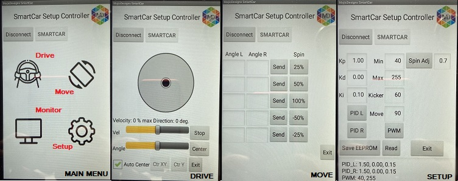

|
Smart Car Controller
1.0
Library to manage a two wheeled robotic vehicle
|
|
Smart Car Controller
1.0
Library to manage a two wheeled robotic vehicle
|
This final phase is all about testing the vehicle 'in real life' as it moves about on the floor. The dynamics of this situation are likely to be different from the bench testing previously done, so some additional tuning may be necessary.
The step uses the Setup_Control example sketch and the related App Inventor 2 (AI2, see http://ai2.appinventor.mit.edu/) "Setup Control" application found in the example sketch folder. The AI2 application provides a GUI front end for commands through a Bluetooth interface. The same commands could be issued from the Serial Monitor (or other Terminal program) connected through a Bluetooth serial port.
The AI2 application has a main menu leading to a displays for controlling drive() and move(), a Terminal to monitor messages from the vehicle and a setup display for changing config parameters. The current parameter settings are shown in the setup screen's terminal window and can be changed from there.

This is the last of the setup parameters. When the vehicle executes a spin() and then stops, it will continue to move for a short time due to angular inertia. This parameter is a 'fudge' factor to stop the motion before the actual end (derate) so that the vehicle will coast to approximately the right spot. The factor is the fraction of the full rotation motion (for example, 0.7 will stop the motion 70% through the required steps).
This parameter set up is a compromise between long rotations (more momentum) and short ones (less momentum).
A final check of these parameters in action with the vehicle moving its own weight around. The parameters can be modified from the setup screen of ther AI2 app if they need further tuning.